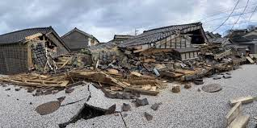

An earthquake is a sudden and violent shaking
of the ground caused by the movement of tectonic
plates beneath the Earth's surface. This movement
releases energy in the form of seismic waves, which
radiate outward from the point of origin, called the
hypocenter or focus. The intensity of an earthquake can
vary widely, ranging from barely perceptible tremors to
catastrophic events that cause extensive damage and loss
of life. Earthquakes can occur along fault lines, where
tectonic plates meet, or can be triggered by volcanic activity
or human-induced actions.

- Movement of Tectonic Plates
Earthquakes result from the shifting and grinding of Earth's tectonic plates, releasing stored energy. This movement can occur along various types of plate boundaries, including convergent boundaries where plates collide, divergent boundaries where plates move apart, and transform boundaries where plates slide past each other horizontally.
- Volcanic Eruptions
Magma movement during volcanic activity can fracture rocks, generating seismic waves and causing earthquakes. Volcanic earthquakes are often associated with the movement of magma beneath the Earth's surface or with the collapse of volcanic material.
- Underground Explosions
Human activities like mining or explosions can induce seismic events by creating vibrations that propagate through the Earth. These induced earthquakes can vary in magnitude depending on factors such as the size of the explosion and the geological conditions of the area.
- Induced Quaking
Human actions like fracking or injecting fluids underground can alter crustal stress, potentially causing earthquakes. This process, known as induced seismicity, occurs when the injection or extraction of fluids into or from the Earth's crust changes the stress distribution within the rocks, leading to the release of stored energy in the form of earthquakes.
Drop, Cover, and Hold On: If you're indoors, drop to the ground, take cover under a sturdy piece of furniture or against an interior wall, and hold on until the shaking stops. If you're outside, move to an open area away from buildings, trees, streetlights, and utility wires, and drop to the ground. Protect your head and neck with your arms.
Stay Indoors Until Shaking Stops: Even after the shaking stops, remain indoors until it is safe to exit. Aftershocks can occur minutes, hours, or even days after the initial quake. Be prepared to drop, cover, and hold on again if necessary.
Be Prepared: Keep an emergency kit with essential supplies such as water, food, a first-aid kit, flashlight, and batteries in an easily accessible location. Include items such as sturdy shoes, extra clothing, and a blanket to protect against injuries and exposure to the elements.
Listen to Authorities: Follow instructions from local authorities and emergency services. They will provide information on any necessary evacuations or safety measures. Stay informed through radio broadcasts, official websites, and social media channels for updates on the situation and instructions on how to stay safe.
Check for Gas Leaks: After the shaking stops, check for gas leaks and turn off the main gas valve if you suspect a leak to prevent potential fires or explosions. Avoid using matches, lighters, or any open flames until you are certain there is no gas leak.
Avoid Damaged Areas: After an earthquake, be cautious of damaged buildings, roads, bridges, and other infrastructure. Avoid entering damaged structures until they have been inspected and deemed safe by qualified professionals. Stay away from areas at risk of landslides, flooding, or other secondary hazards.